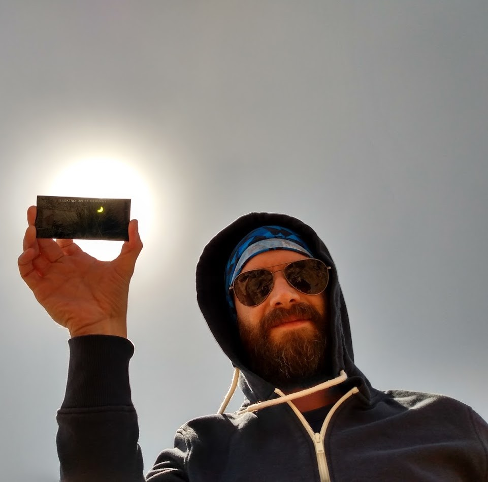

Dr. Andrés Nicolás Ruiz
- I'm a researcher of the Consejo Nacional de Investigaciones Científicas y Técnicas (CONICET) working at the
- Instituto de Astronomía Teórica y Experimental (IATE) and the Observatorio Astronómico de Córdoba (OAC).
- Adress:
- Laprida 854 - Barrio Observatorio
- X5000BGR - Córdoba - Argentina
- Phone:
- +54 - 351 - 5353776 ext 75645
- E-mail:
- andres.ruiz (at) unc.edu.ar
-
-
-
-
Education
- Ph.D. in Astronomy. Facultad de Matemática, Astronomía y Física (FaMAF). Universidad Nacional de Córdoba (UNC).
- Advisor: Dr. Mariano Javier Domínguez. March 21, 2013.
- Licenciate in Astronomy. Facultad de Matemática, Astronomía y Física (FaMAF). Universidad Nacional de Córdoba (UNC).
- Advisor: Dr. Mariano Javier Domínguez. March 31, 2008.
Current Position
- Adjoint Researcher. Instituto de Astronomía Teórica y Experimental (IATE), Consejo Nacional de
Investigaciones Científicas y Técnicas (CONICET)
- Adjoint Teacher. Observatorio Astronómico de Córdoba (OAC), Universidad Nacional de
Córdoba (UNC).
Publications list
- You can see the list of publications and proceedings here or the ADS list
here. Also, my ORCID is 0000-0001-5035-4913 .
Code
- Here you can download a code to solve the second order differential equation of the growth factor of linear density fluctuations in FRW cosmologies with an arbitrary dark energy equation of state w(a).
- Here you can find the spherical cosmic voids finder Sparkling.
Curriculum Vitae
- Here you can download a PDF file with my CV in spanish or english.
Useful links
- Instituto de Astronomía Teórica y Experimental (IATE) → GO
- Observatorio Astronómico de Córdoba (OAC) → GO
- Asociación Argentina de Astronomía (AAA) → GO
- arXiv e-print archive → GO
- Astrophysics Data System (ADS) → GO
Last updated August 14, 2025.